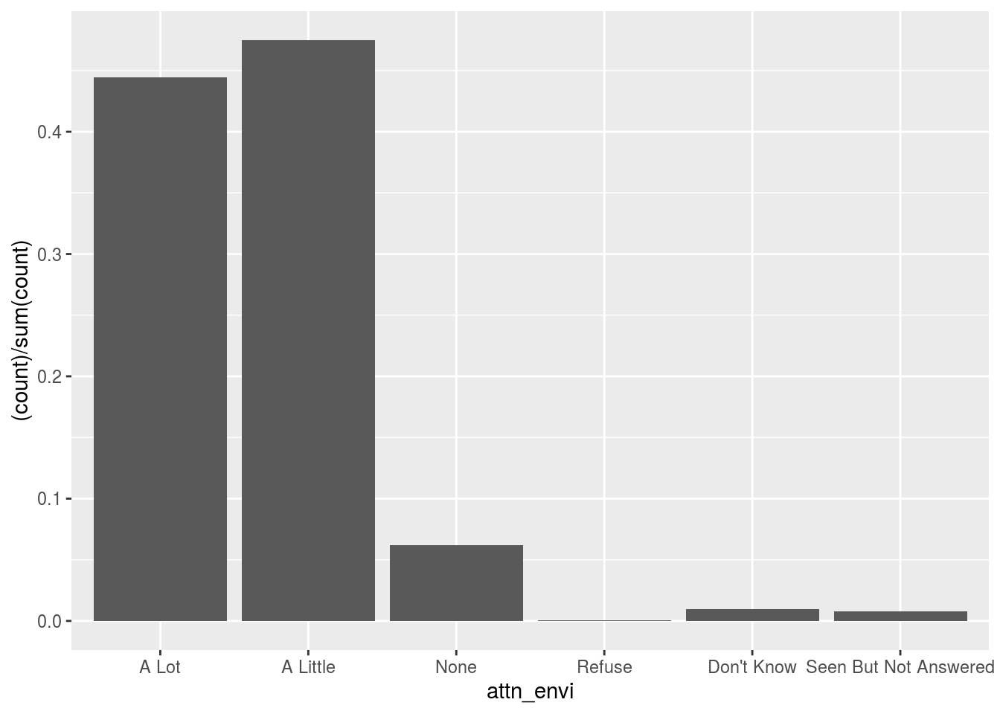
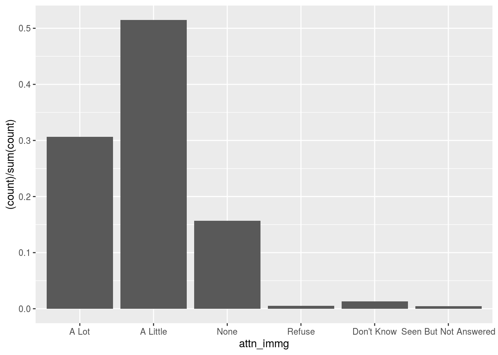

library(tidyverse)
library(visdat)
library(skimr)
library(cesR)
library(labelled)TMRW MORN
Could talk about How CAN Political Parties Satisfy their Voters YES YES YES
ADD FIGURE LABELS (IE Figure 1.1, Equation 1.2)
Abstract
This paper analyzes the most important things to voters of the; Liberal, Conservative, and NDP political parties in Canada and compares them to what these political parties promise to accomplish if elected. FOUND FOUND FOUND FOUND FOUND FOUND FOUND FOUND FOUND FOUND FOUND FOUND This study is significant as voter satisfaction is extremely important in keeping elected parties in office for future terms.
Intro
When a new Prime Minister is elected, their party must review the promises they made while campaigning and decide which they will act upon and how they will fulfill them. These decisions play a key role in determining whether or not those who voted for the elected party remain satisfied for their term. Since voter satisfaction is integral for reelection, the candidates and their respective parties must pay a great deal of attention to the issues most important to their voters and focus their powers toward solving them if they hope to continue serving.
Using the data from the Canadian Election Study gathered by cesR, this paper highlights the issues at the forefront of voters’ minds and how well they are addressed by the party they voted for. Additionally, these findings can be used to ??????????? The data gathered was the ces2015_web study from the cesR package. After some filtering, the data was split into three groups according to each voters response to the question “Who are you likely to vote for?” with the groups being, NDP, Liberal, and Conservative voters. Then, bar graphs were created to display the frequency of voters’ responses to a variety of questions including; QUESTIONS QUESTIONS QUESTIONS QUESTIONS QUESTIONS.
By studying the outcomes, we are able to gain an understanding of what issues voters of each party consider the most important. From this, we can compare the policies that each party promises to enact, (and in the case of the winning party, the policies that it actually enacts), with these voter responses to see how well they line up. This will allow us to determine how well these voters’ needs have been met by the party they vote for/intend to vote for. (((((((((((((people find most important given who they vote for)))))))))))
Data
# devtools::install_github("hodgettsp/cesR")get_cescodes()
## index ces_survey_code get_ces_call_char
## 1 1 ces2019_web "ces2019_web"
## 2 2 ces2019_phone "ces2019_phone"
## 3 3 ces2015_web "ces2015_web"
## 4 4 ces2015_phone "ces2015_phone"
## 5 5 ces2015_combo "ces2015_combo"
## 6 6 ces2011 "ces2011"
## 7 7 ces2008 "ces2008"
## 8 8 ces2004 "ces2004"
## 9 9 ces0411 "ces0411"
## 10 10 ces0406 "ces0406"
## 11 11 ces2000 "ces2000"
## 12 12 ces1997 "ces1997"
## 13 13 ces1993 "ces1993"
## 14 14 ces1988 "ces1988"
## 15 15 ces1984 "ces1984"
## 16 16 ces1974 "ces1974"
## 17 17 ces7480 "ces7480"
## 18 18 ces72_jnjl "ces72_jnjl"
## 19 19 ces72_sep "ces72_sep"
## 20 20 ces72_nov "ces72_nov"
## 21 21 ces1968 "ces1968"
## 22 22 ces1965 "ces1965"From the list of available ces studies, we chose ces2015_web as the study for this paper, this was mainly due to the rich variety of questions anaswered in this survey.
ces2015_web <- to_factor(ces2015_web)
head(ces2015_web)
## # A tibble: 6 x 580
## start finish survey_language duration date
## <dttm> <dttm> <fct> <chr> <date>
## 1 2015-08-18 07:39:22 2015-08-18 08:23:23 English Survey 2640 2015-08-18
## 2 2015-10-02 05:32:29 2015-10-02 05:37:35 English Survey 305 2015-10-02
## 3 2015-09-11 06:48:56 2015-09-11 07:01:56 English Survey 779 2015-09-11
## 4 2015-09-26 16:28:22 2015-09-26 16:36:48 English Survey 505 2015-09-26
## 5 2015-08-18 07:36:11 2015-08-18 07:48:13 English Survey 721 2015-08-18
## 6 2015-09-16 06:44:12 2015-09-16 06:54:05 English Survey 592 2015-09-16
## # … with 575 more variables: complete <dbl>, rdm_vote <chr>,
## # rdm_like_pos <dbl>, rdm_think_id <dbl>, rdm_iss <fct>, respID <chr>,
## # browser_name <chr>, browser_version <chr>, browser_os <chr>,
## # browser_agent <chr>, sex_r <fct>, province <fct>, demsat <fct>,
## # imp_issue_TEXT <chr>, attn_heal <fct>, attn_welf <fct>, attn_educ <fct>,
## # attn_envi <fct>, attn_crim <fct>, attn_defn <fct>, attn_immg <fct>,
## # attn_check <fct>, interest <fct>, isslist_unem <dbl>, isslist_free <dbl>,
## # isslist_mili <dbl>, isslist_hlth <dbl>, isslist_abor <dbl>,
## # isslist_corr <dbl>, isslist_terr <dbl>, isslist_sena <dbl>,
## # isslist_rate <dbl>, isslist_elec <dbl>, isslist_abol <dbl>,
## # isslist_pipe <dbl>, isslist_qsov <dbl>, isslist_envi <dbl>,
## # isslist_ppow <dbl>, isslist_debt <dbl>, isslist_taxe <dbl>,
## # isslist_immg <dbl>, isslist_gunc <dbl>, isslist_dayc <dbl>,
## # isslist_pove <dbl>, isslist_econ <dbl>, isslist_othe <dbl>,
## # isslist_othe_TEXT <chr>, isscare_unem <dbl>, isscare_free <dbl>,
## # isscare_mili <dbl>, isscare_hlth <dbl>, isscare_abor <dbl>,
## # isscare_corr <dbl>, isscare_terr <dbl>, isscare_sena <dbl>,
## # isscare_rate <dbl>, isscare_elec <dbl>, isscare_abol <dbl>,
## # isscare_pipe <dbl>, isscare_qsov <dbl>, isscare_envi <dbl>,
## # isscare_ppow <dbl>, isscare_debt <dbl>, isscare_taxe <dbl>,
## # isscare_immg <dbl>, isscare_gunc <dbl>, isscare_dayc <dbl>,
## # isscare_pove <dbl>, isscare_econ <dbl>, isscare_othe <dbl>,
## # isscare_othe_TEXT <chr>, lklytovote <fct>, vote_for <fct>, vote_oth <chr>,
## # vote_lean <fct>, vote_for_if <fct>, vtunlik_ln <fct>, voted_for <fct>,
## # voted_oth <chr>, vote_secon <fct>, notvote <fct>, sat_govt <fct>,
## # ptfeel_cons <dbl>, ptfeel_libs <dbl>, ptfeel_ndp <dbl>, ptfeel_bq <dbl>,
## # ptfeel_green <dbl>, ldrfeel_hrpr <dbl>, ldrfeel_trud <dbl>,
## # ldrfeel_mulc <dbl>, ldrfeel_ducp <dbl>, ldrfeel_may <dbl>, taxes <fct>,
## # taxes_200 <fct>, taxes_40 <fct>, taxes_corp <fct>, spnd_hlth <fct>,
## # spnd_welf <fct>, spnd_educ <fct>, spnd_envi <fct>, …Since by default, the ces data is not converted into a factor type, we first applied the function to_factor() to our ces2015_web data so that we can more easily work with it. With a total column space of 580, the data is much too large to efficienty work with so, using the select function, we created a new variable, ces2015_wev_wrk, which isolates the columns; province, attn_heal, attn_welf, attn_educ, attn_envi, attn_crim, vote_for, sat_govt, taxes, taxes_200, taxes_40 The corresponding questions to these columns are:
I felt that these questions were of high importance on a nationwide level and that policies regarding them would be most likely to draw in voters due to this importance, thus these are the questions we will progress with for this study.
ces2015_web_wrk <- ces2015_web %>%
filter(vote_for %in% c('The Conservative Party', 'The Liberal Party', 'The New Democratic Party'))
table(ces2015_web_wrk$vote_for)
##
## The Conservative Party The Liberal Party The New Democratic Party
## 1135 1383 1398
## The Bloc Québécois The Green Party Other Party
## 0 0 0
## None of these Will Spoil Ballot Don't Know / Undecided
## 0 0 0
## Refuse to Answer Don't Know/Refused Seen But Not Answered
## 0 0 0Since there is a difference in the number of voters in each group, we must keep this in mind as we progress, being sure not to make any strong comparisons between the groups before bringing them down to relative terms.
ces2015_web_wrk_Con <- ces2015_web %>%
filter(vote_for == 'The Conservative Party')
ces2015_web_wrk_Lib <- ces2015_web %>%
filter(vote_for == 'The Liberal Party')
ces2015_web_wrk_Dem <- ces2015_web %>%
filter(vote_for == 'The New Democratic Party')
ces2015_web_wrk_Al <- ces2015_web %>%
filter(province == 'Alberta')
ces2015_web_wrk_On <- ces2015_web %>%
filter(province == 'Ontario')
ces2015_web_wrk_BC <- ces2015_web %>%
filter(province == 'British Columbia')
ces2015_web_wrk_Qu <- ces2015_web %>%
filter(province == 'Quebec')Next, we split the data up according to what party each voter intends on voting for, using the most popular parties, we are left with three groups of voters, Conservative party voters, Liberal party voters, and New Democratic party voters. Using these cleaned datasets, we are now able to begin examining the results of each voter’s survey.
Experimental Data Analysis
ces2015_web_wrk %>%
ggplot(aes(x = attn_educ, fill = vote_for)) +
geom_bar(color = 'black', position = 'dodge')
In our first graph, we examine responses to question attn_educ; ‘How much attention do you pay to education?’ As will be the case with the majority of these graphs, our data appears to be heavily skewed toward the first three responses, a lot, a little, and none which was to be expected.
Organized first by their response, and second by the political party they intend to vote for, this grouped bar graph displays the quantity of each response recorded by the voters. The political parties being voted for are identified by color, with red representing the Conservative party, green representing the Liberal party, and blue representing the New Democratic party. As we can see, those who voted for the Liberal party and the New Democratic party responded saying they paid a lot of attention to education in the country in a higher proportion than those who vote for the Conservative Party.
ces2015_web_wrk %>%
ggplot(aes(x = spnd_educ, fill = vote_for)) +
geom_bar(color = 'black', position = 'dodge', aes(y = (..count..)/sum(..count..))) POLICY POLICY POLCY POLICY
POLICY POLICY POLCY POLICY
ces2015_web_wrk %>%
ggplot(aes(x = attn_envi, fill = vote_for)) +
geom_bar(color = 'black', position = 'dodge')
Our next graph displays the results to the question attn_envi; ‘How much attention do you pay to the environment?’ in a similar fashion to the first graph wherein voters were organized by both their response to this question, as well as vote_for; “QUESTION QUESTION QUESTION QUESTION QUESTION.”
The results suggest to us a couple of things regarding each party; those voting for the Liberal party are quite mixed in their attention to the environment in the Country, NDP voters more often expressed a lot of attention the the environment, and Conservative voters most often displayed a little attention to the environment.
These results can help to guide politicians and policymakers of each party when deciding on what policies to enact when elected. For example, given the turnout for Conservative Voters, the Conservative party should not, upon election, announce a POLICY POLICY POLICY POLICY POLICY POLICY POLICY, as this would not be as effective at keeping voter satisfaction high.
ces2015_web_wrk %>%
ggplot(aes(x = spnd_envi, fill = vote_for)) +
geom_bar(color = 'black', position = 'dodge')
POLICY POLICY POLICY POLICY
ces2015_web_wrk %>%
ggplot(aes(x = attn_heal, fill = vote_for)) +
geom_bar(color = 'black', position = 'dodge')In this graph, results for the question attn_heal are displayed with the same method as the first again.
this suggests to us that healthcare is of high importance to voters in each party as all three parties display the most votes for a lot of attention paid to healthcare.
Based on this outcome, policymaakers are suggested to address healthcare in the country no matter what party they represent due to its high importance
ces2015_web_wrk %>%
ggplot(aes(x = spnd_hlth, fill = vote_for)) +
geom_bar(color = 'black', position = 'dodge') POLICY POLICY POLICY POLICY
POLICY POLICY POLICY POLICY
ces2015_web_wrk %>%
ggplot(aes(x = spnd_crim, fill = vote_for)) +
geom_bar(color = 'black', position = 'dodge')ces2015_web_wrk_Con %>%
ggplot(aes(x = attn_educ)) +
geom_bar(aes(y = (..count..)/sum(..count..)))
ces2015_web_wrk_Lib %>%
ggplot(aes(x = attn_educ)) +
geom_bar(aes(y = (..count..)/sum(..count..)))ces2015_web_wrk_Dem %>%
ggplot(aes(x = attn_educ)) +
geom_bar(aes(y = (..count..)/sum(..count..)))ces2015_web_wrk_Con %>%
ggplot(aes(x = spnd_educ)) +
geom_bar(aes(y = (..count..)/sum(..count..)))ces2015_web_wrk_Lib %>%
ggplot(aes(x = spnd_educ)) +
geom_bar(aes(y = (..count..)/sum(..count..)))ces2015_web_wrk_Dem %>%
ggplot(aes(x = spnd_educ)) +
geom_bar(aes(y = (..count..)/sum(..count..)))ces2015_web_wrk_Con %>%
ggplot(aes(x = attn_envi)) +
geom_bar(aes(y = (..count..)/sum(..count..)))ces2015_web_wrk_Lib %>%
ggplot(aes(x = attn_envi)) +
geom_bar(aes(y = (..count..)/sum(..count..)))
ces2015_web_wrk_Dem %>%
ggplot(aes(x = attn_envi)) +
geom_bar(aes(y = (..count..)/sum(..count..)))
ces2015_web_wrk_Con %>%
ggplot(aes(x = spnd_envi)) +
geom_bar(aes(y = (..count..)/sum(..count..)))ces2015_web_wrk_Lib %>%
ggplot(aes(x = spnd_envi)) +
geom_bar(aes(y = (..count..)/sum(..count..)))
ces2015_web_wrk_Dem %>%
ggplot(aes(x = spnd_envi)) +
geom_bar(aes(y = (..count..)/sum(..count..)))ces2015_web_wrk_Con %>%
ggplot(aes(x = attn_immg)) +
geom_bar(aes(y = (..count..)/sum(..count..)))
ces2015_web_wrk_Lib %>%
ggplot(aes(x = attn_immg)) +
geom_bar(aes(y = (..count..)/sum(..count..)))
ces2015_web_wrk_Dem %>%
ggplot(aes(x = attn_immg)) +
geom_bar(aes(y = (..count..)/sum(..count..)))
ces2015_web_wrk_Con %>%
ggplot(aes(x = attn_heal)) +
geom_bar(aes(y = (..count..)/sum(..count..)))
ces2015_web_wrk_Lib %>%
ggplot(aes(x = attn_heal)) +
geom_bar(aes(y = (..count..)/sum(..count..)))ces2015_web_wrk_Dem %>%
ggplot(aes(x = attn_heal)) +
geom_bar(aes(y = (..count..)/sum(..count..)))
ces2015_web_wrk_Con %>%
ggplot(aes(x = spnd_hlth)) +
geom_bar(aes(y = (..count..)/sum(..count..)))
ces2015_web_wrk_Lib %>%
ggplot(aes(x = spnd_hlth)) +
geom_bar(aes(y = (..count..)/sum(..count..)))ces2015_web_wrk_Dem %>%
ggplot(aes(x = spnd_hlth)) +
geom_bar(aes(y = (..count..)/sum(..count..)))ces2015_web_wrk_Con %>%
ggplot(aes(x = attn_crim)) +
geom_bar(aes(y = (..count..)/sum(..count..)))
ces2015_web_wrk_Lib %>%
ggplot(aes(x = attn_crim)) +
geom_bar(aes(y = (..count..)/sum(..count..)))ces2015_web_wrk_Dem %>%
ggplot(aes(x = attn_crim)) +
geom_bar(aes(y = (..count..)/sum(..count..)))ces2015_web_wrk_Con %>%
ggplot(aes(x = spnd_crim)) +
geom_bar(aes(y = (..count..)/sum(..count..)))
ces2015_web_wrk_Lib %>%
ggplot(aes(x = spnd_crim)) +
geom_bar(aes(y = (..count..)/sum(..count..)))ces2015_web_wrk_Dem %>%
ggplot(aes(x = spnd_crim)) +
geom_bar(aes(y = (..count..)/sum(..count..)))ces2015_web_wrk_Con %>%
ggplot(aes(x = attn_defn)) +
geom_bar(aes(y = (..count..)/sum(..count..)))
ces2015_web_wrk_Lib %>%
ggplot(aes(x = attn_defn)) +
geom_bar(aes(y = (..count..)/sum(..count..)))ces2015_web_wrk_Dem %>%
ggplot(aes(x = attn_defn)) +
geom_bar(aes(y = (..count..)/sum(..count..)))get_question('ces2015_web', 'p_iss_busi')
## When businesses make a lot of money, everyone benefits, including the poor
ces2015_web_wrk_Con %>%
filter(is.na(p_iss_busi) == FALSE) %>%
ggplot(aes(x = p_iss_busi)) +
geom_bar(aes(y = (..count..)/sum(..count..)))
ces2015_web_wrk_Lib %>%
filter(is.na(p_iss_busi) == FALSE) %>%
ggplot(aes(x = p_iss_busi)) +
geom_bar(aes(y = (..count..)/sum(..count..)))ces2015_web_wrk_Dem %>%
filter(is.na(p_iss_busi) == FALSE) %>%
ggplot(aes(x = p_iss_busi)) +
geom_bar(aes(y = (..count..)/sum(..count..)))ces2015_web_wrk_Con %>%
filter(p_pos_mino < 101) %>%
ggplot(aes(x = p_pos_mino)) +
geom_bar(aes(y = (..count..)/sum(..count..)))ces2015_web_wrk_Lib %>%
filter(p_pos_mino < 101) %>%
ggplot(aes(x = p_pos_mino)) +
geom_bar(aes(y = (..count..)/sum(..count..)))ces2015_web_wrk_Dem %>%
filter(p_pos_mino < 101) %>%
ggplot(aes(x = p_pos_mino)) +
geom_bar(aes(y = (..count..)/sum(..count..)))ces2015_web_wrk_Con %>%
ggplot(aes(x = religion)) +
geom_bar(aes(y = (..count..)/sum(..count..)))ces2015_web_wrk_Lib %>%
ggplot(aes(x = religion)) +
geom_bar(aes(y = (..count..)/sum(..count..)))
ces2015_web_wrk_Dem %>%
ggplot(aes(x = religion)) +
geom_bar(aes(y = (..count..)/sum(..count..)))Discussion
Limitations
The most apparent limitation of the dataset is the fact that it is a survey where not all answers can be checked for truthfulness. That is, we must rely on the people taking this survey to provide truthful answers that we can depend on for our analysis. With questions like ‘who did you vote for?’ or ‘who will you vote for?’ it would be very easy for someone taking this survey to either lie or change their decision which would affect the true outcome of this study. Since, however, there is no realistic way of checking for this type of thing, we must operate under the assumption that we are being provided with completely true data. Aside from people falsifying their answers to the survey, questions like ‘how much attention do you pay to the environment’ can be quite vague and possibly result in a number of people answering the question in different ways leading to inconsistent answers. The number of questions that were unanswered by voters also make it extremely difficult to get a full picture of what voters of each political party most want
IF NOT DONE Being able to remove responses like ‘Seen but not answered’ would help to make the displays of data more full Additional factors I could have discussed could have helped provide more insight into what is most important to voters and what policymakers whouls focus on
R Markdown
This is an R Markdown document. Markdown is a simple formatting syntax for authoring HTML, PDF, and MS Word documents. For more details on using R Markdown see http://rmarkdown.rstudio.com.
You can embed an R code chunk like this:
summary(cars)
## speed dist
## Min. : 4.0 Min. : 2.00
## 1st Qu.:12.0 1st Qu.: 26.00
## Median :15.0 Median : 36.00
## Mean :15.4 Mean : 42.98
## 3rd Qu.:19.0 3rd Qu.: 56.00
## Max. :25.0 Max. :120.00
fit <- lm(dist ~ speed, data = cars)
fit
##
## Call:
## lm(formula = dist ~ speed, data = cars)
##
## Coefficients:
## (Intercept) speed
## -17.579 3.932Including Plots
You can also embed plots. See Figure 1 for example:
par(mar = c(0, 1, 0, 1))
pie(
c(280, 60, 20),
c('Sky', 'Sunny side of pyramid', 'Shady side of pyramid'),
col = c('#0292D8', '#F7EA39', '#C4B632'),
init.angle = -50, border = NA
)
Figure 1: A fancy pie chart.